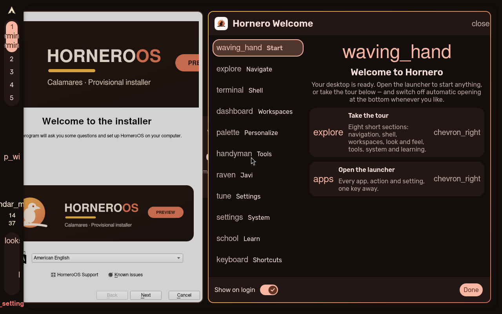
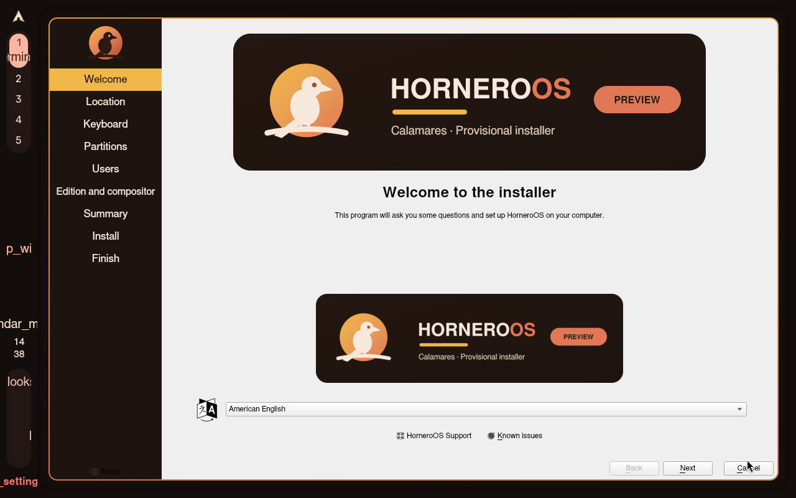
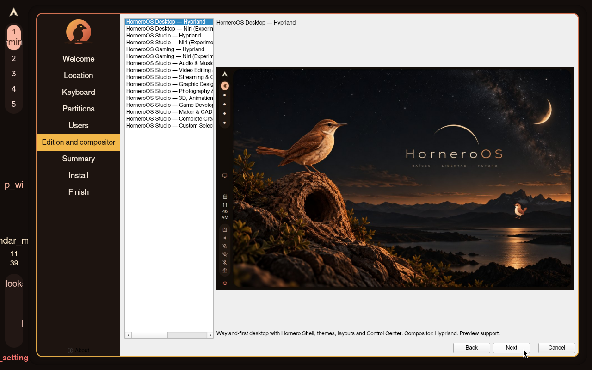
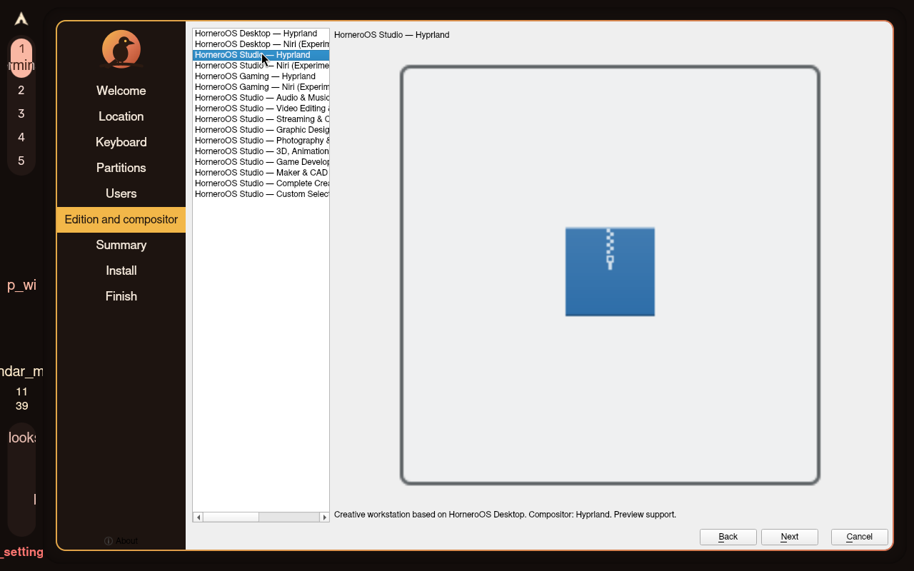
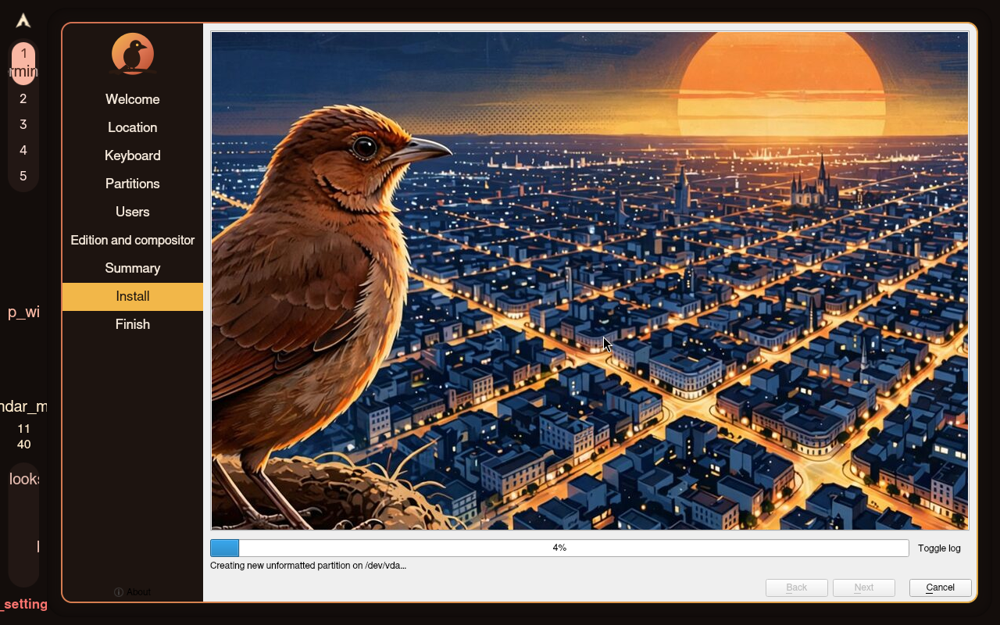
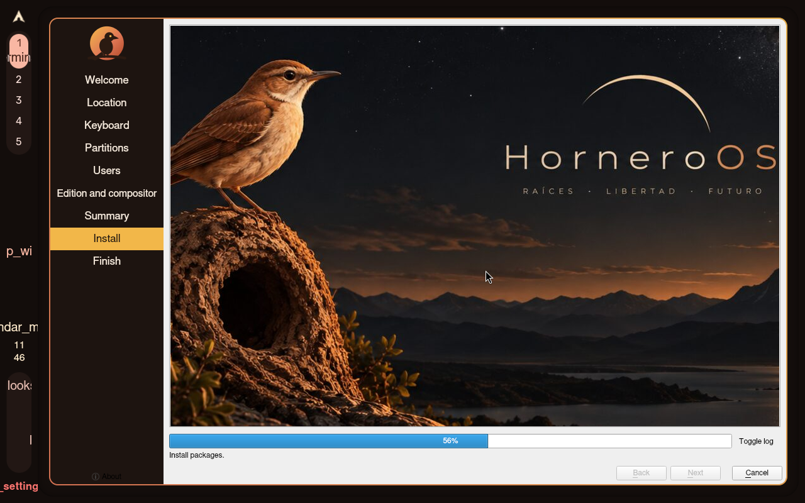
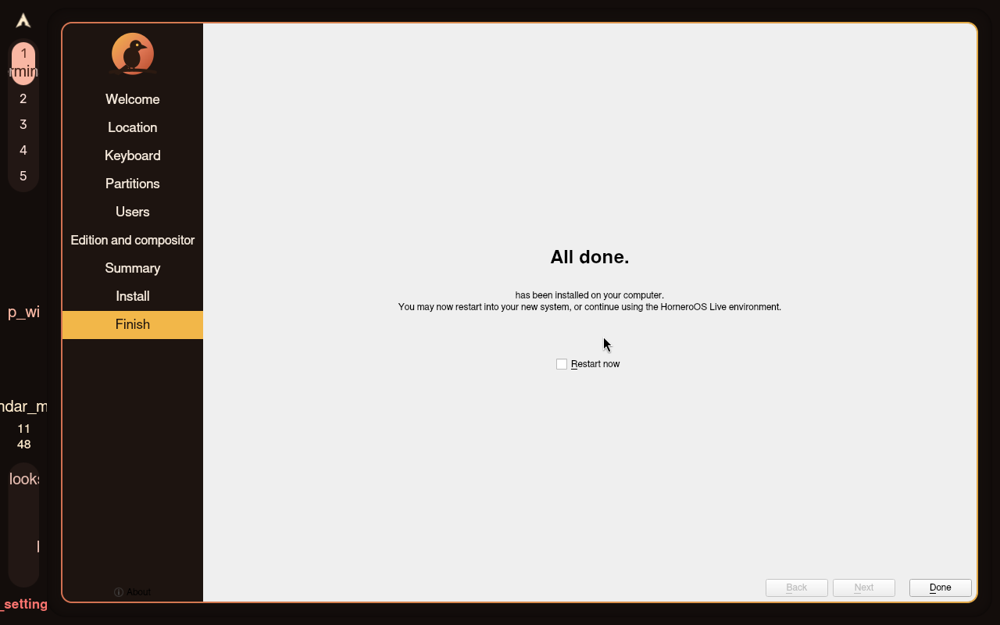
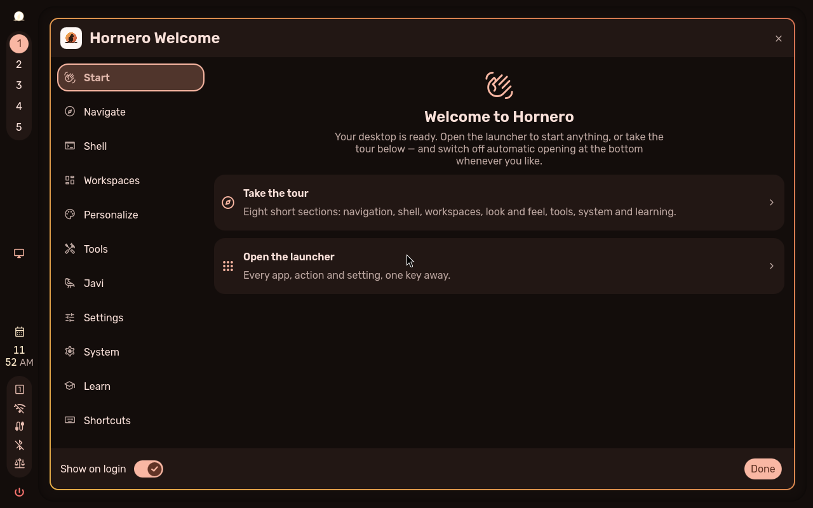
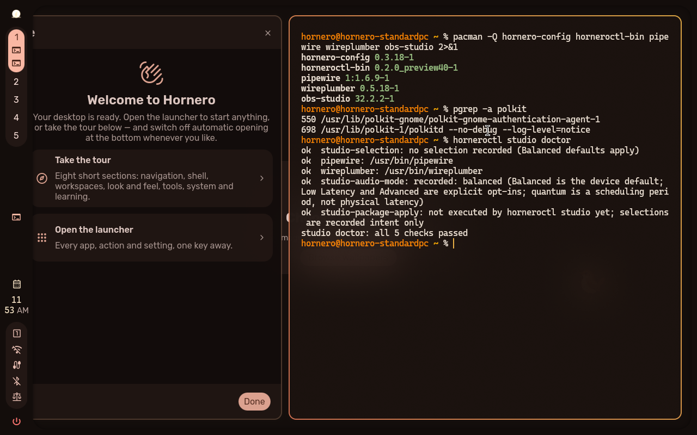

install/studio-uefi-unencrypted INCONCLUSIVE
20261104T143736Z-install-studio-uefi-unencrypted-1 · attempt 1 · 937 s · class inconclusive
Reason: Imported manual preview32 evidence (ISO b8cd0f86): RESULT.md and screenshots document install completion, graphical login, OOTB versions and horneroctl studio doctor 5/5, but do not record every scenario proof probe (shell IPC, Hyprland config errors, installed edition profile/system-info, pacman.conf cleanup, REAPER absence); the probes screenshot also shows studio-selection: no selection recorded, which does not establish the persisted-selection proof. Inconclusive, not a proof-complete PASS.
Instruction
Boot the candidate ISO in a disposable VM (UEFI firmware, blank target disk), launch the graphical installer, choose the Studio candidate specialization when prompted, without encryption, create the QA user, let installation finish, reboot with the ISO detached, authenticate at the greeter, and leave the installed desktop running for the proofs.
Proof
| where | kind | note | detail | |
|---|---|---|---|---|
| ❌ | manual-import | manual | Operator-supplied verdict for the manual run; see RESULT.md. No scenario proof probe results are recorded by the importer. | logs/RESULT.md |
Product and environment
| iso | horneroos-2026.10-preview32-x86_64.iso |
|---|---|
| iso_sha256 | b8cd0f8604bc69f7d2112fb8bccd97115d32d197e9c92c62e02faf5de6345aec |
| installer_sha | 329e66831ad5a31e48c466771f015ef05568e571 |
| product_sha | a44964197c456fa44faeaff675206705c7bbdf1b |
| engine | manual-qmp-install-harness |
| hornero_qa | 0.1.0 |
| source_dir | preview32-studio |
| imported_via | hornero-qa import |
Screenshots



















Actions
{"t": 0, "kind": "manual-run", "source": "preview32-studio"}
{"t": 937, "kind": "import", "tool": "hornero-qa import", "result_md": "logs/RESULT.md", "screenshots": 10}
Logs: logs/ · machine-readable: run.json, result.json, assertions.json, actions.jsonl